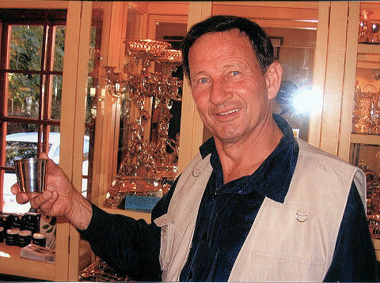
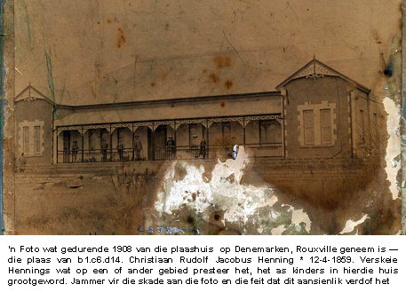
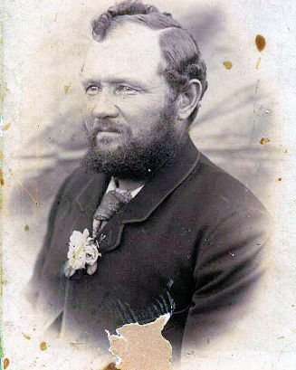
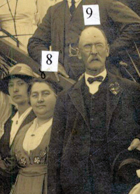
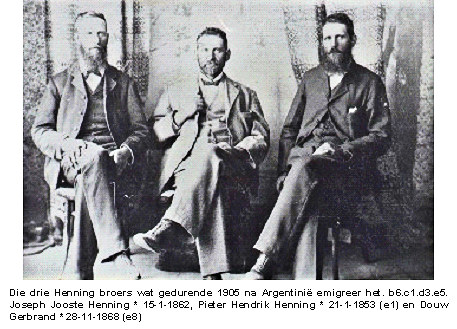
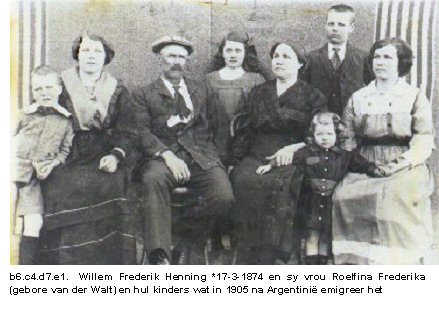
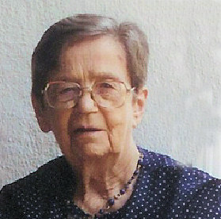
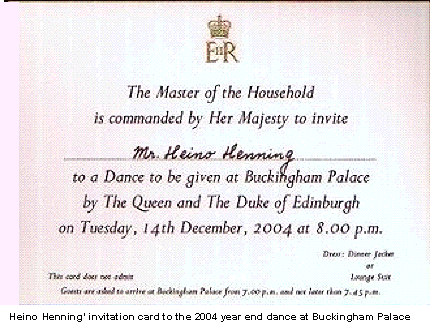
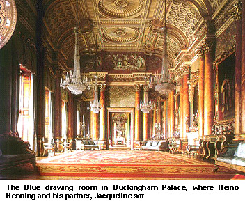
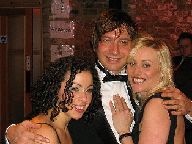

|
Indeks: |

Onder kunskenners is dit bekend dat items wat van ou Kaapse silwer gemaak is, van hoër waarde is as soortgelyke items wat van ander silwer gemaak is - dit geld veral silwer wat by Silwermyn, in die Kaapse Skiereiland gemyn is.
Bondsekretaris, Olivier Henning is bewus daarvan dat verskeie van sy ouma Henning (Magdalena Maria Daisy Henning, gebore Beeton, *5-1-1877) se voorsate van die bekendste silwersmede en klok-/horlosiemakers aan die Kaap was. Onder diegene tel die silwersmede Johan Hendrik Vos *1749, sy seun en kleinseun, beide Jacobus Johannes Vos *1785 en 1814 onderskeidelik, Willem Godfried Lötter *1748 en die klok-/horlosiemakers, Georg Christoffel Wolhuter en sy seun Christoffel Paulus Wolhuter.
Onlangs het Olivier en eggenote, Charlotte bietjie rondgedwaal in een van die antieke winkeltjies in Franschhoek ('n klipgooi vanaf hulle woning). Dit was 'n winkeltjie wat spesialiseer in antieke silwerware. Nodeloos om te sê dat die prys van al die silwerware ver bo die finansiële vermoë van die gewone man is.
Olivier het aan die winkelier vertel dat van sy voorsate van die vroegste bekende silwersmede aan die Kaap was. Tot sy verbasing kom die winkelier te voorskyn met twee items wat deur Johan Hendrik Vos *1749 gemaak is - 'n klein silwer bekertjie, wat gedurende 1790 vervaardig is en 'n snuifdosie wat uit 'n skulp, met 'n silwer dekseltjie vervaardig is. Die silwerbekertjie is te koop teen R49 500.00 en die snuifdosie teen R18 900.00.
Dit is tragies dat hierdie items van onskatbare geskiedkundige en sentimentele waarde, in alle waarskynlikheid uiteindelik deur buitelanders opgeraap sal word.

Linda van Tonder van Ferndale het 'n rukkie gelede in haar kaste rondgekrap en op 'n hele klompie ou foto's, koerantuitknipsels en briewe van haar Henning voorsate, wat op die plaas Denemarken, in die Rouxville distrik gewoon het, afgekom. Dit was die plaas van b1.c6.d14. Christiaan Rudolf Jacobus Henning *12-4-1859 en sy vrou Anna Maria Gertruida (gebore Smith). Verskeie van hul nasate, wat op hierdie plaas groot geword het, het met verloop van tyd op verskillende gebiede buitengewoon goed presteer.
Onder die items wat Linda vir ons gestuur het, was daar onder andere foto's van b1.c6.d11. Lourens Jacobus Henning *16-5-1853, 'n foto wat met die troue van een van b1.c6.d14 Christiaan Rudolf Jacobus Henning *12-4-1859 se dogters geneem is en waarop verskeie familielede verskyn, en dan 'n foto wat gedurende 1908 van die woonhuis op die plaas Denemarken geneem is.
Hierdie plaashuis is natuurlik gedurende die Anglo-Boere Oorlog tot op die grond afgebrand, maar is na die oorlog weer oor gebou. Die foto het ongelukkig met verloop van tyd ernstige skade opgedoen en het ook heeltemal begin verdof - tot so 'n mate dat mens nie meer veel op die foto kon uitmaak nie.
Ons kon gelukkig met behulp van rekenaartegnologie die foto 'n bietjie duideliker maak, sodat mens darem kan uitmaak wat daarop aangaan.
Baie dankie aan Linda van Tonder vir hierdie waardevolle toevoegings tot die Henning argief.




Honderd jaar gelede, op 21 Oktober 1905 het 'n paar honderd Boere, hoofsaaklik van die Burgersdorp- en Philipstown distrikte vanaf die Kaapse hawe na Argentinië vertrek met die doel om hulle permanent daar in die distrik van Comodora Rivadavia, in die provinsie Chubut te gaan vestig. Kan mens glo dat die tyd so snel verby geskiet het? Verskeie nasate van hierdie Boere is lede van ons Familiebond, daarom wil ons graag in hierdie uitgawe van Ons Haantjie hierdie epogmakende gebeurtenis in herrinnering roep.
Hierdie mense het eerder kans gesien om onder die mees onherbergsame omstandighede in 'n Spaanssprekende en Rooms-Katolieke land te gaan bly, as om onder Britse bewind in Suid-Afrika aan te bly. Na die vredesluiting na die Anglo-Boere-oorlog het gemoedere maar baie hoog geloop teenoor die "bose" imperiale boelie, Brittanje.
Vier Henning gesinne was onder hierdie groep Boere wat na Argentinië emigreer het - die drie broers b6.c1.d3.e1 Pieter Hendrik Henning *21-1-1853, Joseph Jooste *15-1-1862 (e5) en Douw Gerbrand *28-11-1868 (e8). Dan ook hul neef b6.c4.d7.e1 Willem Frederik Henning *17-3-1874.
Omstandighede in hierdie vreemde land was toe heeltemal anders as wat hierdie pioniers kon voorsien het: Hulle moes hulle vestig in Patagonië, 'n uiters onherbergsame half woestyn; die meeste kon nie eiendomsreg op hul grond kry nie en sou vir altyd bywoners moes bly; die taal en godsdiens was 'n groter probleem as wat hulle kon voorsien.
Pieter Hendrik en Douw Gerbrand en hul gesinne het nie lank gebly nie en keer reeds gedurende 1909/10 na Suid-Afrika terug. Die meerderheid het egter vir etlike jare - 32 jaar uitgehou voordat ook hulle besluit het om liewer na Suid-Afrika terug te keer. So is 'n hartseer hoofstuk in die geskiedenis van die Afrikanervolk afgesluit. In hierdie verband het 'n Henning, b6.c1.d3.e5.f3. Pieter Hendrik Henning 'n leidende rol gespeel. Hy was die leier van die groep van 237 Boere wat in 1937 na Suid-Afrika teruggekeer het.
Daar het tog 'n groep - ook enkele Henning gesinne- in Argentinië agtergebly. Sommige van hulle praat vandag nog Afrikaans, hoewel hulle in alle opsigte Argentynse burgers is. Baie het deur ondertrouery heeltemal verspaans en weggetrek - selfs na ander lande, soos die VSA. Ons hoop dat ons hulle spoor eendag weer sal kan optel en hulle weer deel maak van die trotse familie waarvan hulle afstam.
Hoofstuk 7 van die Henning familiekroniek gee 'n redelike volledige relaas van hierdie trek en die mense wat betrokke is.
 
Ons het ongelukkig eers die afgelope maand verneem dat b1.c3.d10.e10.f2.g1. Jacobus Wessel (Kosie) Henning *1-3-1932 van Okahandja, Namibië op 9 Desember 2004 oorlede is. Hy en sy vrou Vienie was lede van die Familiebond. Ons wil ons innige simpatie met Vienie, haar kinders en kleinkinders betuig met die verlies van 'n geliefde.
Cecilia Johanna van der Merwe *18-1-1916 (Sus, soos sy genoem is), dogter van Ds J P van der Walt en sy vrou b6.c1.d3.e4.f5. Maria Magdalena Henning was 'n erelid van ons Familiebond en baie trots op haar Henning voorsate. Sy en haar oorlede man, Prof Jan Sarel van der Merwe het te Potchefstroom gewoon. Tannie Sus is op 14 April 2005 in die versorgingseenheid van Huis Eikelaan, Potchefstroom oorlede.
Op 26 April 2005 is daar in die Doodsberigte in Die Burger berig oor die afsterwe van Aletta Sophia (Leatitia) Henning (gebore Huskisson). Sy is gebore op 22 Mei 1941 en is oorlede op 24 April 2005 te Middelburg, Transvaal. Vir een of ander rede het ons haar nie op rekord in die Henning Familiekroniek nie. Is daar enige van ons lede wat vir ons lig kan werp op hierdie persoon - wie se eggenote sy was en waar sy in die Familiekorniek inpas.

Die bestuur van die Familiebond het al verskeie kere die suggestie by ons lede gelaat om die Familiebond in gedagte te hou wanneer hulle hul testament opstel - dit geld veral lede wat nie nasate van hul eie het nie. Die gedagte is dan om alle gelde wat na 'n persoon se dood aan die Familiebond bemaak word, in 'n trustfonds te stort, waaruit daar dan mettertyd studiebeurse aan belowende Henning studente toegeken kan word. Ons besef dat dit baie jare (dekades) kan duur voordat voldoende fondse beskikbaar sal wees om beurse toe te ken, maar mens moet tog êrens 'n begin maak.
Ons is vas oortuig dat dinge in die "nuwe Suid-Afrika" (die toekomstige Azanië) nie vir mense met die van Henning, sal verbeter nie.
Ons gaan vir onsself en ons nasate moet sorg, totdat ons en ons Volksgenote êrens in die verre toekoms weer selfbeskikking en/of groepsregte (in watter vorm ookal) kry en 'n eie regering na ons jongmense se belange sal kan help omsien. Ons is dit aan ons nasate verskuldig!
As Bondsekretaris is ek dankbaar, verheug en trots om te kan aandui dat ons lede tans voldoende finansieël bydra om alle normale bedryfsuitgawes te dek, en dat ons selfs in staat is om 'n reserwe op te bou vir onvoorsiene uitgawes. Reserwe fondse word dus tans in 'n spesiale reserwefonds gespaar.
Die stelsel waarvolgens ons dit aan elke lid oorlaat om self te besluit hoeveel hy/sy kan en wil bydra, is suksesvol. Dit is duidelik dat ons lede begin besef dat hulle trots kan wees om die van Henning te dra en dat die Familiebond 'n baie belangrike rol in hierdie verband speel. Die bestuur is die mening toegedaan dat hierdie reserwefonds reeds as die begin van ons "Studiebeursfonds" beskou kan word.
Ons wil nou die suggestie by lede laat om voort te gaan om hul jaarlikse bydrae vir die instandhouding van die Familiebond te skenk, maar dit ook te oorweeg om van tyd tot tyd spesiale bydraes vir die "Studiebeursfonds" te maak. Bydraes van hierdie aard kan spesifiek so gemerk word. Ons is vas oortuig dat ons in 'n paar jaar se tyd 'n aardige bedraggie so byeen kan bring.

Ten spyte daarvan dat ons in die vorige beriggie meld dat dit goed gaan met die finansies van die Familiebond, is daar nog verskeie lede wat geen bydrae vir 2005 gemaak het nie - 25 in totaal. U bydrae, hoe klein ookal, dra by tot die bereiking van ons doelwitte. Ons laat dit aan elke lid oor om self te besluit hoe groot bydrae hy/sy kan lewer. Bydraes wissel tans tussen R60.00 en R300.00 per lid per jaar, met R100.00 die mees gewilde bedrag. Daar is egter lede wat groter bydraes maak, maar daar is ook lede wat kleiner bydraes maak. Alle bydrae is ewe welkom - net die feit dat u bereid is om 'n bydrae te maak weerspieël u trots in u familienaam.
Lede kan dit gerus oorweeg om 'n klein bedraggie maandeliks per debietorder by te dra. 'n Debietorder van R20.00 per maand bring mee dat u oor 'n tydperk van 'n jaar, R240.00 bygedra het. Vir die Familiebond is dit van groot waarde, terwyl uself later amper nie meer hierdie bedraggie voel nie.
Ons vermeld graag die name van lede wat oor die afgelope drie maande bydraes van R200.00 of meer gemaak het:
* Gideon Henning van Strand (die Voorsitter van die Familiebond) en sy vrou Wiena wat Lewenslange Lede is, het weereens 'n bydrae van R300.00 gemaak.
* Willie- en Gerda Henning van Leeufontein, Burgersdorp wat ook Lewenslange Lede is, is die enigste Henning ouerpaar wat 'n drieling het -R200.00.
* Mev Vienie Henning, weduwee van Kosie Henning van Okahandja, Namibië - R200.00.
* Derek Marcus Henning van Mutare, Zimbabwe - R200.00.
* Ellen Naudé (gebore Henning) en haar man Eric van Rosslynn, Pretoria (ook Lewenslange lede) - R200.00.
* Tjaart - en Louisa Henning van Sinoville, Pretoria - R500.00.
Die Familiebond se bankiers, ABSA Bank, hanteer ons tjekrekening asof dit 'n besigheid is. Dit bring mee dat ons buitengewoon hoë bankkoste moet betaal. Die bestuur van die Familiebond het dus besluit om ons tjekrekening te sluit en 'n Spaarrekening te open. Lede wat dus voortaan hul bydraes direk in die Familiebond se rekening wil deponeer, word vriendelik versoek om dit in die volgende rekening te deponeer: Bank - ABSA Bank, Villiersdorp, Takkkode - 334-612; Rekeningno - 9142653956; Rekeningnaam - Henning Familiebond; Tipe rekening - Spaarrekening.
Moet asseblief nie meer ons tjekrekening gebruik wanneer u geld deponeer nie.

Twee keer per jaar word 'n nuwe, opgedateerde uitgawe van die Henning Familiekroniek beskikbaar gestel. Dit is met trots dat ons aankondig dat Uitgawe no 2 van 2005, wat teen September 2005 beskikbaar sal wees, aansienlik bygewerk is met heelwat nuwe gegewens en foto's. 'n Skyfievertoning oor die Stamvader, Pieter Hendrik Henning is ook op die laserskyf opgeneem.
Omdat ons baie trots op hierdie nuwe uitgawe is, is daar besluit om dit tot die einde van die jaar teen R120.00 (posgeld en verpakking ingesluit) beskikbaar te stel.

b7.c1.d3.e1.f1.g1.h2.i1. Heino Henning, seun van André - en Ann Henning van Uvongo werk tans in London, Brittanje. Ons het onlangs die volgende baie interessante brief van hom, via sy pa ontvang:
I met Jacqueline through an old school friend who is studying here in London, She works in the Queen's service at Buckingham Palace. This being the season of year end parties the Queen had the exact same thing in mind for her staff. Jacqueline was brave enough to ask me along!!!!! The ball was held Tuesday 14 December and we arrived at the Palace, suited and booted at about 19:30. We got onto the red carpet and stepped inside a different world. The biggest staircase I've seen in a long time welcomed us and invited us into the state rooms. This went up about 3 stories and somewhere in the middle of the climb we turned back to see a Romeo and Juliet balcony with a choir sing Christmas carols. Suddenly I got over all the excitement and actually started taking in what I was seeing all around me. We were standing on a carpet inches thick on a staircase that leads to heaven. The walls were covered with paintings by masters such as Rembrandt, no one smaller than 3 x 5 meters, there were marble sculptures and antique furniture with the most exquisite vases on top.
Our seating was arranged in the Blue drawing room and as my luck would have it, it was on the furthest side of the palace and we needed to walk trough all the room en route to our table. It turns out that the Blue drawing room is the most opulent of them all. Jacqueline is a fabulous girl from Die Swartland, literally in the middle of nowhere, somewhere in the Cape Province of South Africa. She speaks Afrikaans like it is meant to be spoken and has everyone in stitches with laughter just by stating the obvious, and there we were, sat at the table next to all the Queen's right hand people, the Mater of the Household, the Keeper of the Purse, the Main Butlers....We couldn't believe it. Imagine two foreigners, speaking Afrikaans, there in the Queens most important state room. (Pictured on the last page - all the furniture shown here were replaced with dining tables).
Everybody had champagne and we sat down to dinner at 20:00 sharp. We had a 4 course meal consisting of a Salmon Starter. For mains there was Chicken wrapped in Pancetta served with spinach and butternut and a citrus cake with mulled berries for dessert. The forth course was coffee served with little chocolate tarts. They served the best wine I've ever tasted. The red was as smooth as butter with very subtle flavours and complex tones. Now all of you know that I am no pretentious wine snob and really don't know anything about wine tasting, but I guess its because I've never had such fine wine. I could taste all the layers and hidden flavours that you hear people always carry on about ...
The Queen and the rest of the Royals had their dinner in private and once the meal was finished everybody had to get up for Her Majesty to arrive. She entered the Blue Drawing Room first and looked spectacular. She wore a beige dress with complicated designs embroided with golden threat. The dress was body hugging and came down all the way draping onto the floor. She had a sparkling diamond tiara and her hair was done pretty much in the same style as it is on the money. She stopped at our table first and spoke to us all. Mostly trivial hello-and-thanks-for-coming's and an enquiry about the mirrored branch decorations on the table. We addressed her as Your Majesty and there after as Ma'am. She was so friendly and down to earth. Her husband prince Philip entered the room and immediately got chatting to the catering bar staff who were standing opposite us, how nice of him to make even the hired staff feel at home. He was jovial and friendly, cracked some jokes about the funny Christmas hats they donned and then proceeded further along the room, we only didn't get to speak to him and Princess Anne.
Then the rest of the royal siblings followed, they entered about 5 minutes after another, in the order of their position in line to the Throne. Prince Charles was attending the Royal Variety Performance that evening so Prince Andrew was first to enter following him was Princess Royal Anne, her husband and finally Prince Edward and Sophie. They all spend a good 3 (three) minutes chatting to the people from our table. Jacqueline works in the Accounting depart-ment and we sat at the table with most of her colleagues, I guess the saying: don't bite the hand that feeds you proves right and seeing that our table were the people paying salaries (including that of the Royals) they were all very friendly and made an effort to speak to us! How lucky for me ...
Once the Queen and her entourage finished mingling, the dancing started and we used this as the perfect opportunity to walk around and take in more of the surroundings. We walked through the ball room where all the state banquets take place. It is a massive room with walls that stretch a good 10 meters high. The wooden floor is made from the most intricate inlay work. Polished to a high gloss it boasts with its signs of age, as if every piece of wood in that floor knows that it had provided a solid awe inspiring vista for the likes of Queen Victoria and probably every single statesman and royalty who lived after her.
We left the palace at 12:00 that evening and had to return to our normal lives, but even though it was time to leave, it will never be time to forget, how I was once greeted by Her Majesty Queen Elizabeth the Second!
We weren't allowed to take photographs there and I haven't received our official photos yet, so here is a picture of me, Kika and Sarah, taken at the station's year end party.